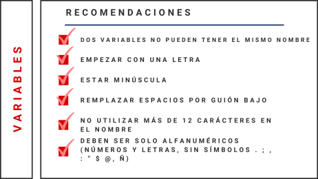

En parte importante de nuestras investigaciones producimos datos: hacemos encuestas, recopilamos datos administrativos e indicadores. En el desarrollo de nuestros proyectos muchas/os nos encontramos con el dilema de compartir nuestros datos al resto de la comunidad científica pero muchas veces no sabemos cómo lograrlo. ¿Cómo abrir nuestros datos? ¿Qué criterios debo cumplir para que sean publicados? ¿Dónde y cómo publicarlos? En el siguiente blog te contestaremos estas preguntas.
Paso 1: ¿Qué es lo que necesito?
Empecemos con lo primero: qué elementos debo considerar para compartir los datos de mi proyecto. En general, lo que tenemos o recibimos (cuando encargamos el terreno) de nuestro estudio son cuatro elementos:
1. Bases de datos: archivo que contiene la información recopilada. Este archivo puede estar en distintos formatos, como por ejemplo, en .csv y .xlsx (Excel), .sav (SPSS), .dta (STATA) o .RData (R).
2. Cuestionario: en caso de estar trabajando con una encuesta, es el archivo que contiene las preguntas que se le realizaron a los participantes del estudio. Es un documento de texto que está en formato .pdf o .docs.
3. Libro de códigos: es un documento donde aparece información de las variables, valores y etiquetas, correspondientes a la base de datos. En este podemos ver claramente indicada la asociación entre las preguntas del cuestionario y las variables de la base datos.
4. Ficha técnica: o también nombrado “informe metodológico”, es el documento que nos permite conocer características del diseño metodológico propias del instrumento de análisis. En el encontraremos información sobre el terreno, tipo de instrumento y, en algunas ocasiones, una descripción sobre los datos recopilados.
En algunas ocasiones no todos estos elementos están presentes. Si es así ¡no es tiempo de abandonar la cruzada por abrir tus datos! En el siguiente paso podrás conocer cuál es su formato admisibles y cómo elaborarlos en caso de que no los tengas.
Paso 2: ¿Cómo darle en un formato aceptable?
1. Bases de datos
Para resguardar la calidad de nuestros datos debemos asegurar una correcta codificación de las respuestas y nombramiento de las variables, ambas bases fundamentales de los datos (filas y columnas). Un paso inicial es realizar un análisis descriptivo de los datos para reconocer posibles problemas producidos por digitación, por ejemplo.
1.1 Codificación de las respuestas
1.1.2 Identificar casos perdidos: se deben clasificar a los tipos de perdido de manera diferenciada. Esto implica que codificar con distintos números los perdidos como: “No sabe”, “No responde”, “No aplica”, “Sin dato”, “Error de proceso/Dato no disponible”. Te proponemos el siguiente esquema
| Respuesta | Código numérico |
|---|---|
| No responde | -999 |
| No sabe | -998 |
| Error de proceso | -997 |
| No aplica | -996 |
| Sin dato | -995 |
| No disponible | -994 |
1.1.2. Identificación de unidades de observación: debemos asegurarnos de tener tantas variables identificadoras como unidades de análisis tengamos. Esto quiere decir, que si nuestros datos incluyen información tanto a nivel individual como grupal de nuestras observaciones, debemos identificarlos en distintas variables. Por ejemplo, imaginémos que estamos realizando un estudio panel a empresas. En los datos tenemos que tener disponible una variable id-empresa y id-empresa-tiempo (que nos designará un identificador de la ocurrencia de respuesta).
1.2 Nombres de variables
Las variables son el elemento con el cuál trabajamos cuando analizamos datos. Por ello deben responder a dos criterios
1.2.1. Claridad y coherencia: para cada escala o módulo temático de tu instrumento, debes incorporar una letra distinta seguido de un número. Por ejemplo, para el módulo S s_1, s_2 y para el módulo O o_1, o_2, …
Otra opción es trabajar con abreviaturas nemotécnicas, es decir, nombres corrtos de las variables que representan el significado del ítem. Por ejemplo, nt_mujeres para designar el Número de trabajadores mujeres en la empresa que estudiamos.
1.2.2 Utilizables: como la idea central es poder compartir nuestros datos, estos deben ser poder abiertos por otros softwares. Para ello las variables deben cumplir estos puntos:

🗸 Si decides etiquetar tus variables con alguna descripción sobre estas, debes guardarlas en un formato como .sav, .dta o .RData para que conserve esta característica
2. Cuestionario
Debes asegurar que se cumplan los siguientes puntos
🔴 El cuestionario disponible es el que efectivamente fue aplicado (¡no es trivial! muchas veces elaboramos varias versiones de este antes de aplicarlo)
🔴 El orden y fraseo de preguntas y categorías de respuesta debe corresponder al efectivamente aplicado
🔴 Para evitar ediciones posteriores, recomendamos mantener el cuestionario en .pdf
3. Libro de códigos
Este documento es clave para que los (futuros) usuarios/as de sus datos cuenten con información suficiente para utilizarlos correctamente. Para que cumpla su objetivo debes verificar que hay coherencia entre
🔴 La pregunta del cuestionario y la variable indicada
🔴 El orden de las categorías de respuesta en el cuestionario y en los valores codificados en la base de datos
🔴 El número de preguntas/ítems disponibles en el cuestionario y el número de variables disponibles en los datos. Solo en algunos casos, por cuestiones de anonimización, no se disponen públicamente de todas las preguntas consultadas
🔴 Para evitar ediciones posteriores, recomendamos mantener el libro de códigos en .pdf
4. Ficha Técnica
Este resumen sobre el diseño metodológico aplicado debe incluir como mínimo los siguientes puntos:
🔴 Estrategia de recolección de información: se debe indicar el tipo de instrumento (eg. encuesta, datos administrativos, etc.), población y muestra objetivo.
🔴 Descripción del terreno: cuándo, cómo y dónde fue aplicado el terreno. Es decir, se debe indicar la fecha de aplicación, formato (presencial, online,telefónica, cuestionario auto-aplicado) y ubicación geográfica. También si hubieron hitos o perturbaciones importantes al desarrollo del estudio.
🔴 Descripción muestral (solo en caso de encuestas): indica el tipo de muestreo, tasa de respuesta y variables principales que permitieron construir los ponderadores y factores de expansión.
🔴 Identificación de la institución responsable: ya sea una consultora o el mismo equipo a cargo de la investigación, esto debe estar especificado en la ficha.
De todas maneras, una ficha metodológica puede incluir muchos más elementos, por ejemplo, una revisión de la distribución de las variables y/o una presentación de los tópicos incluidos en la base de datos.
🗸 Para evitar ediciones posteriores, recomendamos mantener la ficha técnica en .pdf
En síntesis
| Elemento | Criterio | Recomendación | Formato | model |
|---|---|---|---|---|
| Base de datos | Codificación correcta de respuestas | 1. Identificar casos perdidos | .sav, .dta o .Rdata | 1. 1 Ejemplo de base de datos |
| 2. Identificar unidades de observación | ||||
| Nombres de variables claros | 1. Claridad y coherencia en su orden | 1.2 Ejemplo de base de datos | ||
| 2. Ser utilizables por otros softwares | ||||
| Cuestionario | Congruencia con base de datos | 1. Verificar la versión del cuestionario | Archivo documento .pdf | 1.1 Ejemplo de cuestionario |
| 2. Verficar orden y frases de categorías de preguntas y categorías de respuesta | 1.2 Ejemplo de cuestionario | |||
| Libro de códigos | Coherencia entre base de datos y cuestionario | 1. Verificar que la pregunta y la variable sean las mismas | 1.1 Ejemplo de libro de códigos | |
| 2. Verificar el orden de las categorías y valores de la base | 1.2 Ejemplo de libro de códigos | |||
| Ficha Técnica | Información mínima para la utilización del usuario | 1. Indicar tipo de tipo de instrumento, población y muestra objetivo. | 1.1 Ejemplo de ficha técnica | |
| 2. Indicar la fecha de aplicación, formato (presencial, online,telefónica, cuestionario auto-aplicado) y ubicación geográfica | ||||
| 3. Indicar el tipo de muestreo, tasa de respuesta y ponderadores y factores de expansión. | 1.2 Ejemplo de ficha técnica | |||
| 4. Identificar institución o grupo ejecutor |